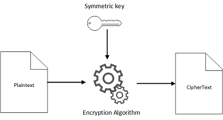

What is Encryption?
Traditionally, encryption is the process of encoding a message in such a way that only people who know how to crack the code. The most common and well known method of encryption is called the Caesar Cipher. The Caesar Cipher is a type of substitution cipher in which each letter in the plaintext is replaced by a letter some fixed number of positions down the alphabet. For example, with a left shift of 3, D would be replaced by A, E would become B, and so on.
Below is a program that demonstrates Caecar Cipher
A Ceasar Cipher
On computers encryption is used to protect a users data. This can be data you are sending to websites for example your bank number and password when logging into the bank's site. Alternitivly it is used to keep the contents of certian files on your computer encoded, like a file of your passwords, or that text document you don't want people reading.
There are many different types of encryption algorthims that exist Here is a short list of some of the more common algortims.
- RSA
- MD5
- SHA-3
- AES
- Blowfish
An Exaustive list of encryption algorithms can befound here
Public Key Encryption
The distinguishing technique used in public key cryptography is the use of asymmetric key algorithms, where a key used by one party to perform encryption is not the same as the key used by another in decryption. Each user has a pair of cryptographic keys – a public encryption key and a private decryption key. Here is a simple Diagram demonstrating the idea behind Public Key Encryption.

Symmetric Key Encryption
Symmetric key cryptography uses the same algorithm and key to both encrypt and decrypt digital data.
